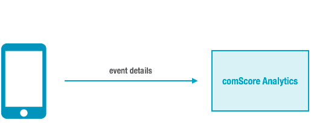

Use the Player V4 comScore analytics plugin to track
comScore analytics for your V4
Ooyala Player in your comScore account. The comScore analytics plugin was developed
by comScore using the Ooyala Analytics Framework. comScore will maintain and update
this plugin.
Run-time Flow During Playback
During playback, a playback event
triggers notification about the event to comScore Analytics.

Supported Players
For this release, Ooyala supports integrating comScore with the HTML5 web player
version 4.3.3 and above.
Integration Tasks
If you would like to use the comScore plugin with Player V4, please contact Ooyala Tech Support and file a support
ticket requesting details on how to enable and use the plugin.